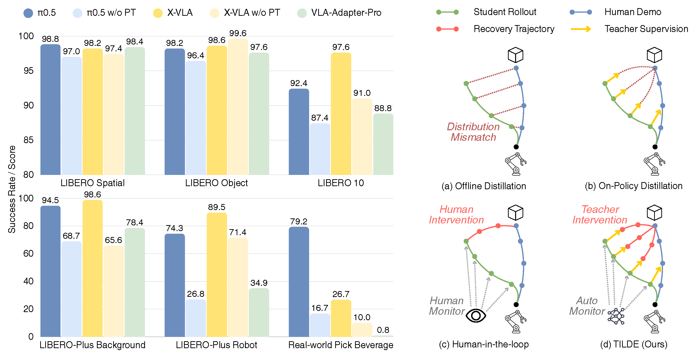
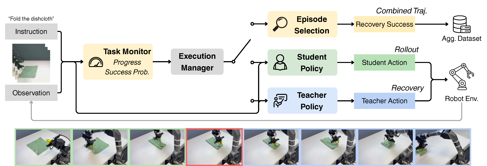

Offline distillation
Teacher supervision is restricted to the demonstration distribution, leading to distribution mismatch during student execution.
Large-scale action pretraining equips Embodied Foundation Models (EFMs) with strong manipulation capabilities, with particular strengths in generalization and closed-loop robustness, but reproducing such pretraining requires substantial robot data and computation. To transfer these capabilities from pretrained EFMs to policies without action pretraining, we introduce TILDE (Teacher-In-the-Loop Distillation from EFMs), which synergizes on-policy distillation at student-induced states with learning from teacher-executed recovery trajectories. We further propose AutoDAgger, an autonomous data aggregation pipeline in which a robotic reward model is utilized to monitor task progress and trigger teacher intervention, thereby collecting recovery experience without human monitoring or manual control. AutoDAgger accelerates recovery-trajectory collection by more than 2× compared with the human-in-the-loop method. By unifying learning from demonstrations, on-policy teacher supervision, and teacher's corrective behavior, TILDE improves task performance by up to 4.1× over behavior cloning across three real-world tasks and supports effective cross-architecture distillation.

Policies without large-scale action pretraining ("w/o PT" & VLA-Adapter-Pro) can perform competitively on standard benchmarks (LIBERO-Spatial & Object), yet larger gaps emerge on long-horizon tasks (LIBERO-10), under visual and robot-initial-state perturbations (LIBERO-Plus), and on the real-world task. Transferring a teacher's capabilities requires supervision at the states a student actually encounters during closed-loop execution.
Teacher supervision is restricted to the demonstration distribution, leading to distribution mismatch during student execution.
The teacher labels student-induced states, but its corrections are not executed, leaving subsequent recovery states unobserved.
Human monitoring and teleoperated takeover collect recovery trajectories, with coverage limited by human supervision bandwidth.
Our method jointly learns from demonstration, student-induced rollout, and failure recovery distributions, with AutoDAgger automating progress monitoring and teacher intervention for efficient data collection.
A teacher is finetuned from a pretrained EFM on human demonstrations and then frozen. The student starts from a pretrained backbone but receives no robot action pretraining. After initial behavior-cloning training, AutoDAgger collects student rollouts and teacher recoveries; the student is then trained on the aggregated data.

AutoDAgger uses an off-the-shelf robotic reward model to track task progress and estimate success probability during student execution. When progress stalls before task completion, the EFM teacher takes over to recover the task. AutoDAgger retains successful teacher recoveries together with the preceding student rollouts, enabling autonomous correction-data collection without human monitoring or intervention.
TILDE learns from three complementary sources: offline demonstrations, states visited during student rollouts, and teacher recovery trajectories. Demonstration and recovery samples combine imitation of recorded actions with teacher distillation, while student-rollout states use teacher supervision only. Distillation operates in the action space, transferring corrective and recovery behaviors without requiring matching teacher and student architectures or intermediate representations.
Fold Dishcloth
Pick Pen
Pick Beverage
TILDE outperforms every evaluated student baseline across all three tasks and narrows the gap to the pretrained teacher. The gains come from learning both teacher corrections at student-induced states and the subsequent recovery experience.
Fold Dishcloth
Pick Pen
Pick Beverage
Adding either student-rollout supervision or recovery distillation improves offline distillation. Combining both produces the highest student scores on all three tasks.
Fold Dishcloth
Pick Pen
Pick Beverage
Imitating recorded recovery actions improves all three tasks over the BC baseline. Adding teacher distillation to recovery data improves the scores further.
| Method | Recovery success |
|---|---|
| Teacher | 9 / 12 |
| BC Baseline | 4 / 12 |
| Offline Distill | 5 / 12 |
| OPD | 5 / 12 |
| TILDE | 8 / 12 |
TILDE recovers from 8 of 12 standardized failure states, compared with 4/12 for BC and 5/12 for both Offline Distill and OPD, approaching the teacher's 9/12. These results show that learning from teacher-executed recovery trajectories transfers stronger closed-loop correction behavior, enabling the student to recover from failures and complete the task.
| Data source | Distill | Fold Dishcloth | Pick Pen | Pick Beverage |
|---|---|---|---|---|
| Human Demo | 20.8 | 37.0 | 16.7 | |
| + 30 Extra Demo | 27.8 (+7.0) | 45.4 (+8.4) | 44.2 (+27.5) | |
| + 30 AutoDAgger | 48.6 (+27.8) | 63.0 (+26.0) | 50.0 (+33.3) | |
| Human Demo | 27.8 | 45.4 | 26.7 | |
| + 30 Extra Demo | 29.2 (+1.4) | 54.6 (+9.2) | 48.3 (+21.6) | |
| + 30 AutoDAgger | 63.9 (+36.1) | 80.6 (+35.2) | 69.2 (+42.5) |
Adding 30 AutoDAgger episodes yields larger gains than 30 additional human demonstrations across all three tasks, with or without distillation. These results suggest that AutoDAgger provides more effective supervision through corrective feedback at student-induced states, which are rarely encountered in conventional demonstrations that typically lead directly to task success.
| AutoDAgger episodes | Score | SR (%) |
|---|---|---|
| 0 | 27.8 | 25.0 |
| 30 | 63.9 | 58.3 |
| 60 | 65.3 | 66.7 |
| 90 | 77.8 | 75.0 |
Increasing AutoDAgger data from 0 to 90 episodes raises the task score from 27.8 to 77.8 and the success rate from 25.0% to 75.0%, showing the benefit of collecting more recovery experience.
| Method | Spatial | Object | Goal | LIBERO-10 | Average |
|---|---|---|---|---|---|
| SmolVLA | 81.4 | 94.4 | 84.2 | 64.6 | 81.2 |
| Offline Distill | 85.2 | 96.4 | 88.4 | 63.8 | 83.5 |
| TILDE | 88.0 | 96.6 | 94.0 | 79.6 | 89.6 |
Action-space supervision allows heterogeneous teacher and student architectures. Distilling from π0.5 into a SmolVLA student without action pretraining improves success on all four LIBERO suites. On the long-horizon LIBERO-10 suite, success rises from 64.6% to 79.6%, while the four-suite average rises from 81.2% to 89.6%.
@article{lu2026tilde,
title={TILDE: Teacher-in-the-Loop Distillation from Embodied Foundation Models},
author={Yuxiang Lu and Yantong Liu and Jinghua Hou and Xueli Sun and Ruihua Han and Zhe Liu and Hengshuang Zhao},
year={2026},
journal={arXiv preprint arXiv:2610.25376},
}